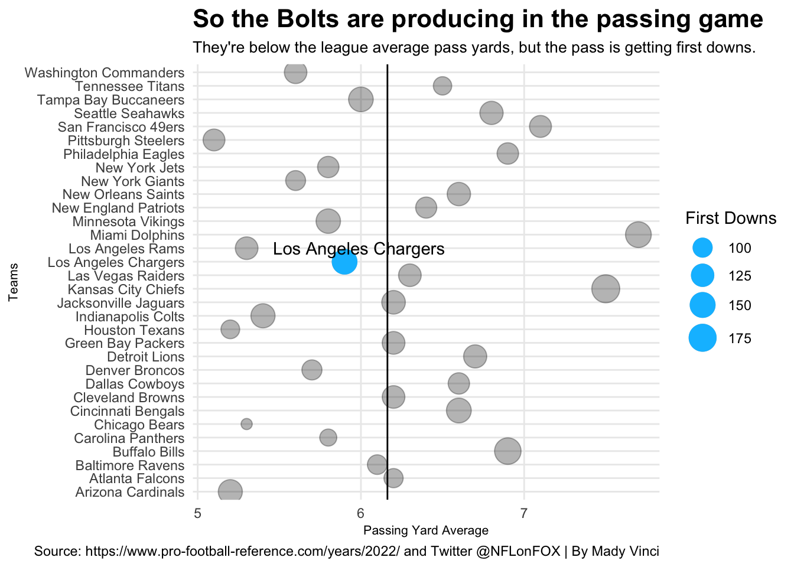

How did the 2022 Los Angeles Chargers season become such a disaster…what is the problem?
nfl
chargers
code
analysis
Author
Mady Vinci
Published
December 4, 2022
I have had multiple conversations throughout this NFL season, about what the problem is with the 2022 Los Angeles Chargers. This was supposed to be the season of Khalil Mack and Joey Bosa dominating at the line, J.C. Jackson having interception after interception, Keenan Allen and Mike Williams being the best receiving duo in the league, and Justin Herbert breaking away as one of the best quarterbacks in the league, and Derwin James keeping the defensive backfield locked down. So why are they only 6-5, losing to teams like the Jacksonville Jaguars and Seattle Seahawks, and pulling out so many last-second wins?
So in these conversations I have been having, my major arguments as to why the Chargers have not been playing well are:
1. The offense is not on the field nearly as long as it should be, either they score too quickly and allow the opponent to take advantage, or they have a quick three-and-out, making the defense come on and try to hold the other teams running game down and keep them from scoring.
2. The offense is not playing well, they aren't moving the ball, and that means no points or they're struggling just to keep up with the other team.
3. The Chargers are the most injury-prone and demolished team in the NFL, requiring them to rely on rookies, third-stringers, and/or players who just are not that good. And then on top of that, the general manager, Tom Telesco, does not go pick up anyone in free agency or before the trade deadline.
For one chart, and my biggest argument of why our team isn’t playing well, is playing time, here’s a look at the Chargers’ offensive time of possession compared to the rest of the league. Does the defense create enough opportunities for the offense to take advantage of?
Code
library(tidyverse)library(ggalt)library(ggrepel)library(cowplot)TimePoss <-read_csv("TimeOfPoss.csv")chargers <- TimePoss %>%filter(Tm =="Los Angeles Chargers")ggplot() +geom_dumbbell(data=TimePoss, aes(y=reorder(Tm, ToP), x=ToP, xend=DefToP),size =1,color ="gainsboro",colour_x ="seagreen2",colour_xend ="indianred3") +geom_dumbbell(data=chargers, aes(y=reorder(Tm, ToP), x=ToP, xend=DefToP),size =1,color ="#0080C6",colour_x ="#FFC20E",colour_xend ="#001433") +labs(x="Time of Possesion", y="Team", title="Can the Chargers offense keep the defense off the field", subtitle="Suprisingly, the offense holds on control time of possession of almost half the game.", caption="Source: https://www.pro-football-reference.com/years/2022/ and https://www.teamrankings.com/nfl/stat/average-time-of-possession-net-of-ot | By Mady Vinci") +theme_minimal() +theme(plot.title =element_text(size =16, face ="bold"),axis.title =element_text(size =8), plot.subtitle =element_text(size=10), panel.grid.minor =element_blank(),plot.title.position ="plot" )
Well, I was wrong about the time of possession, the Chargers’ offense holds the ball on average for 29 minutes and 21 seconds, so almost half the game. This is not bad, especially in relation to the rest of the NFL, the Chargers rank 22nd overall. So our defense is not on the field too long and our offense has about as many chances to put points on the board as the opponent does. The question is, are they taking advantage of those opportunities? Let’s look to see how many yards the Chargers are producing on average in the run and passing game (a.k.a. are they moving down the field at all?).
Code
PassRushAvg <-read_csv("PassRushAvg.csv")LAC <- PassRushAvg %>%filter(Tm =="Los Angeles Chargers")bubble1 <-ggplot() +geom_point(data=PassRushAvg, aes(x=PassAvgYds, y=Tm, size=Pass1D),alpha = .3) +scale_size(range =c(3, 8), name="First Downs") +geom_point(data=LAC, aes(x=PassAvgYds, y=Tm, size=Pass1D), color="deepskyblue1") +geom_vline(xintercept =6.1625) +geom_hline(yintercept =127.9062) +geom_text_repel(data=LAC, aes(x=PassAvgYds, y=Tm, label=Tm))+labs(x="Passing Yard Average", y="Teams", title="So the Bolts are producing in the passing game", subtitle="They're below the league average pass yards, but the pass is getting first downs.", caption="Source: https://www.pro-football-reference.com/years/2022/ and Twitter @NFLonFOX | By Mady Vinci") +theme_minimal() +theme(plot.title =element_text(size =16, face ="bold"),axis.title =element_text(size =8), plot.subtitle =element_text(size=10), panel.grid.minor =element_blank() )plot_grid(bubble1)

Code
bubble2 <-ggplot() +geom_point(data=PassRushAvg, aes(x=RushAvgYds, y=Tm, size=Rush1D),alpha = .3) +scale_size(range =c(3, 8), name="First Downs") +geom_point(data=LAC, aes(x=RushAvgYds, y=Tm, size=Rush1D), color="gold") +geom_vline(xintercept =4.446875) +geom_hline(yintercept =77.09375) +geom_text_repel(data=LAC, aes(x=RushAvgYds, y=Tm, label=Tm))+labs(x="Rushing Yard Average", y="Teams", title="Hard Reality: The Bolts are the third worse rushers in the league...", subtitle="The run could be the krytonite, putting the pressure on Herbert and the receivers.", caption="Source: https://www.pro-football-reference.com/years/2022/ & https://www.nfl.com/teams/ | By Mady Vinci") +theme_minimal() +theme(plot.title =element_text(size =16, face ="bold"),axis.title =element_text(size =8), plot.subtitle =element_text(size=10), panel.grid.minor =element_blank(),plot.title.position ="plot" )plot_grid(bubble2)
So far as the passing game is concerned, the Chargers are ever so slightly below the league average of 6.1625 yards at 5.9 yards per pass. But, when it comes to the run, they’re the third-to-last team in the league at 3.8 yards per yard. In fact, they’re also third from last in first downs from rushes as well, only behind the Los Angeles Rams and the Tampa Bay Buccaneers. With almost three times as much of their first downs coming from their passing game as their rushing game.
Finally, here is a stat I originally saw way back in week 8, Dr. Matt Provencher’s banged-up score (BUS), where we were at the bottom of the league with a score of 50.7, with Philly at the top with a score of 89.0. At the time, the Chargers were one of two teams that had a score below 60, with most teams having a score above 70. Since then, things have shifted around, players have come back, and others have gone out throughout the NFL, so are the Chargers still at the bottom?
Code
BUS <-read_csv("2022BangedUpScore.csv")LAC <- BUS %>%filter(Tm =="Los Angeles Chargers")ggplot() +geom_bar(data=BUS, aes(x=reorder(Tm, -`Bus`),weight=`Bus`), fill="lightgoldenrod1") +geom_bar(data=LAC, aes(x=reorder(Tm, -`Bus`),weight=`Bus`), fill="#0080C6") +labs(x="Banged Up Score", y="Team", title="How healthy are the Chargers?", subtitle="They are opperating at almost half capacity with a Banged Up Score of 52.5.", caption="Source: https://www.pro-football-reference.com/years/2022/ and Twitter @NFLonFOX | By Mady Vinci") +theme_minimal() +coord_flip() +theme(plot.title =element_text(size =16, face ="bold"),axis.title =element_text(size =8), plot.subtitle =element_text(size=10), panel.grid.minor =element_blank() )
So for this, the smaller the bar, the more banged up the team. The Bolts are sitting at the bottom of the league with Bosa out for at least another week, Jackson out for the season, Allen just coming back, Mike Williams still out, half of the starting OL out for the foreseeable future, and Derwin James getting an injury in practice. The Chargers just cannot stay healthy…
For my original hypothesis, I believed that he was going to be a massive contrast in the time that offense and defense were on the field. I believed that our offense scored or went three-and-out too quickly, demanding that our defense come on the field too often and allowing the other team’s offenses to have more attempts at scoring. I found that the offense is actually on the field almost half the game, so what was the problem?
After looking at the yards per rush, yards per reception, first down percentage, and 3rd down conversions, you can see in the numbers what you see in the games, the run game is not producing so the offense is forced to make up for the difference.
Lastly, it is hard to know what kind of a season and difference players, like Joey Bosa and Keenan Allen, would have had if they did not get injured so early, but others, like JC Jackson, were supposed to come in and make an immediate impact and did not. Obviously, losing big players always makes things more difficult, even having injured players like Justin Herbert, who can still play, but it is affecting his play, is definitely an issue. But, there is something to be said if some of the players who we lost, were not producing when on the field.
So, if the blame or focus can not go toward the time of possession, and maybe, not even fully, the injuries, and our passing game is keeping us afloat and putting W’s on the board, that must mean there are deeper issues. Yes, the injuries and unproductive run game does add up, but maybe the issues come from off the field, the coaching staff. The first step, fire Joe Lombardi as offensive coordinator as soon as possible, followed closely by the rest of the staff, and finally offer Sean Payton whatever he wants to become our new head coach.